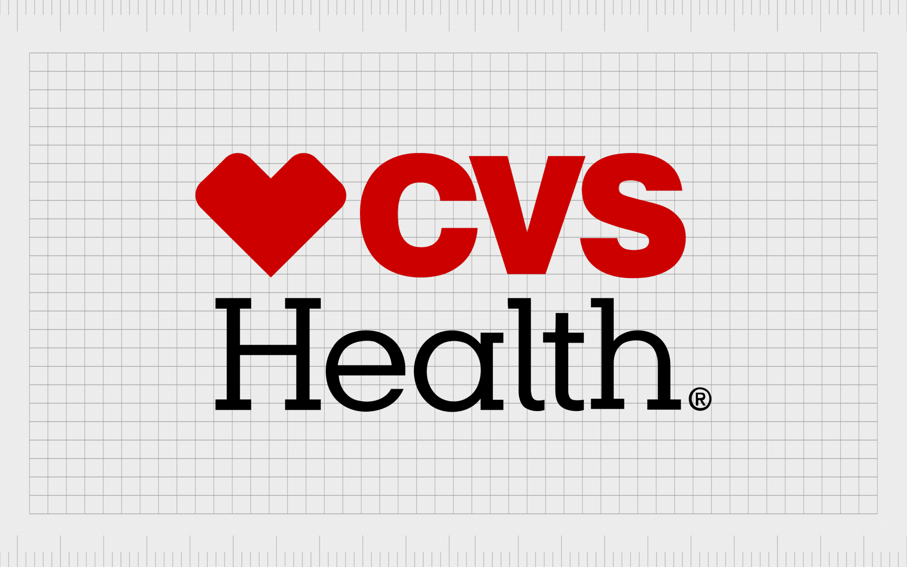

02
CVS Health
I'm the lead design systems designer for our pattern library and I've helped increase design and development for our product launches.
The Role
As the Lead Design Systems Designer at CVS Health, I'm responsible for maintaining and evolving our comprehensive pattern library that serves multiple product teams.
Key Contributions
- Led the development of a scalable pattern library
- Implemented design tokens across the organization
- Created comprehensive documentation
- Established design system governance
Impact
Through systematic improvements and standardization, we've achieved:
- Faster product launches
- Improved consistency across products
- Better collaboration between design and development
- Streamlined design review process